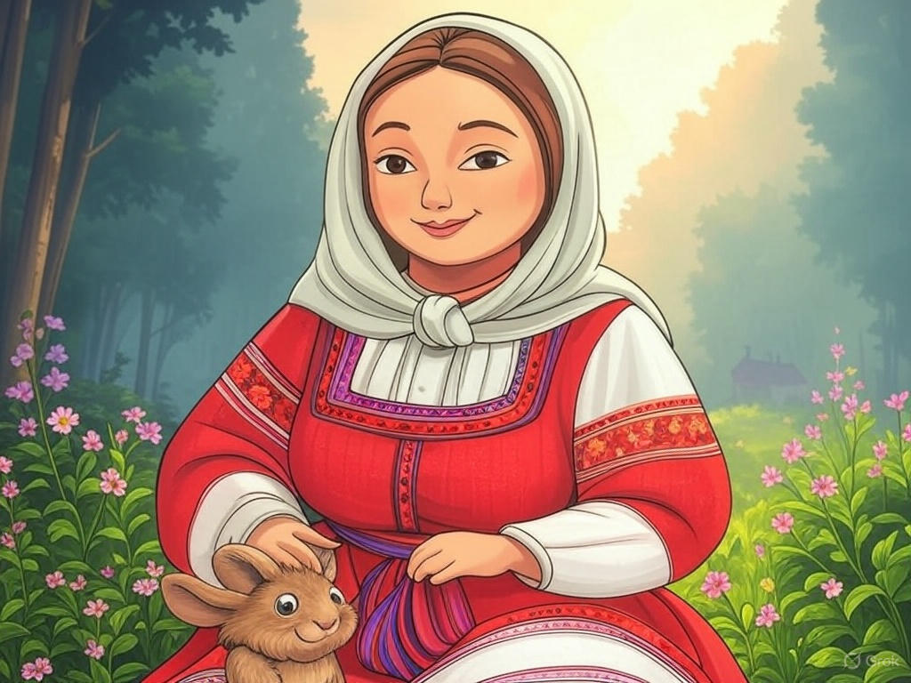
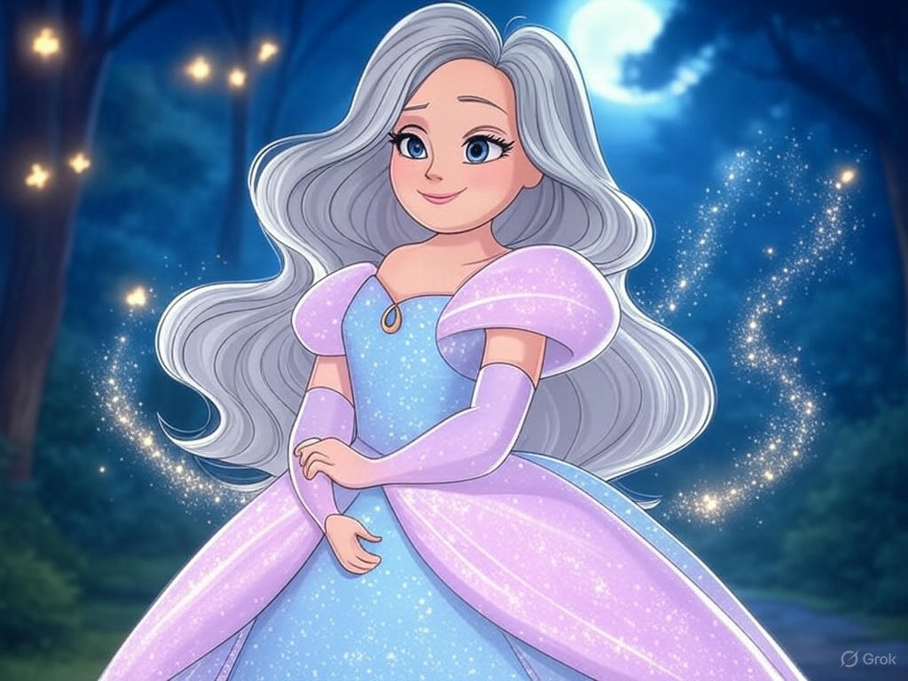
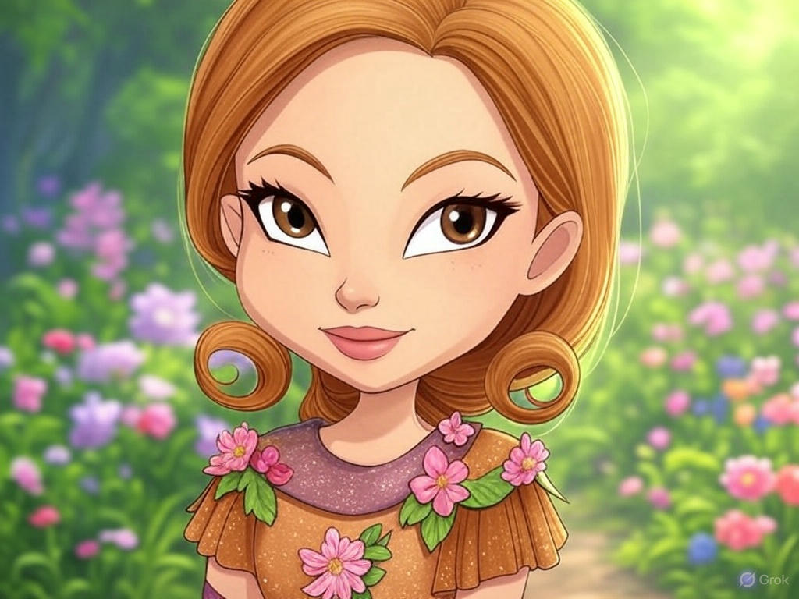
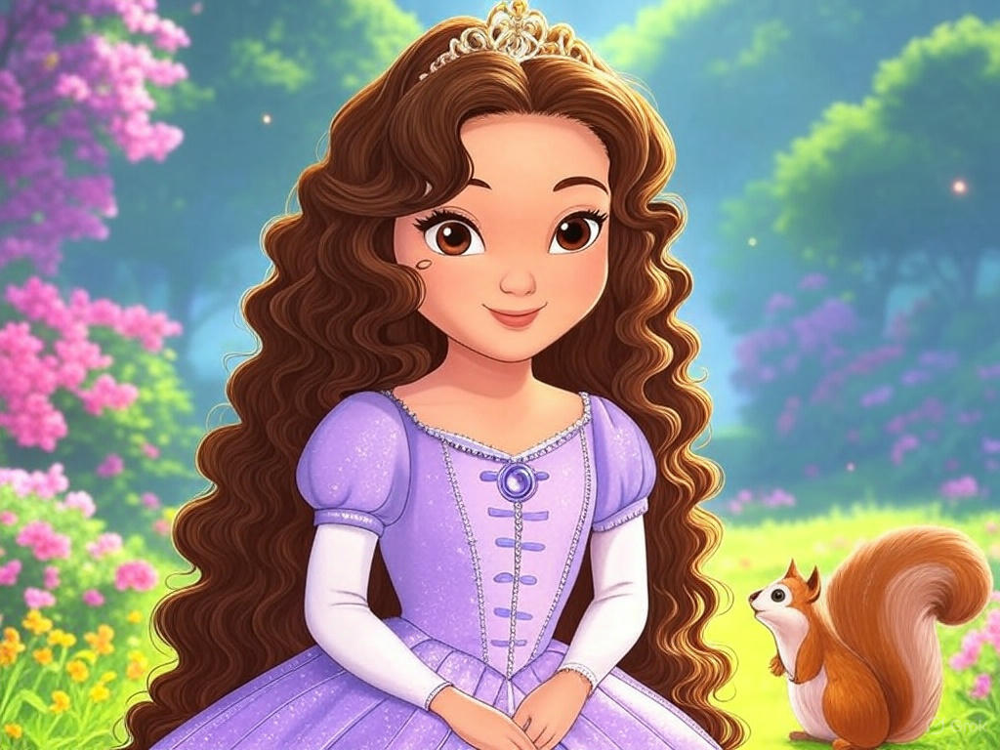
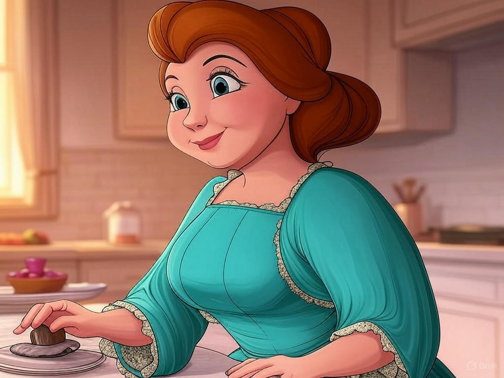
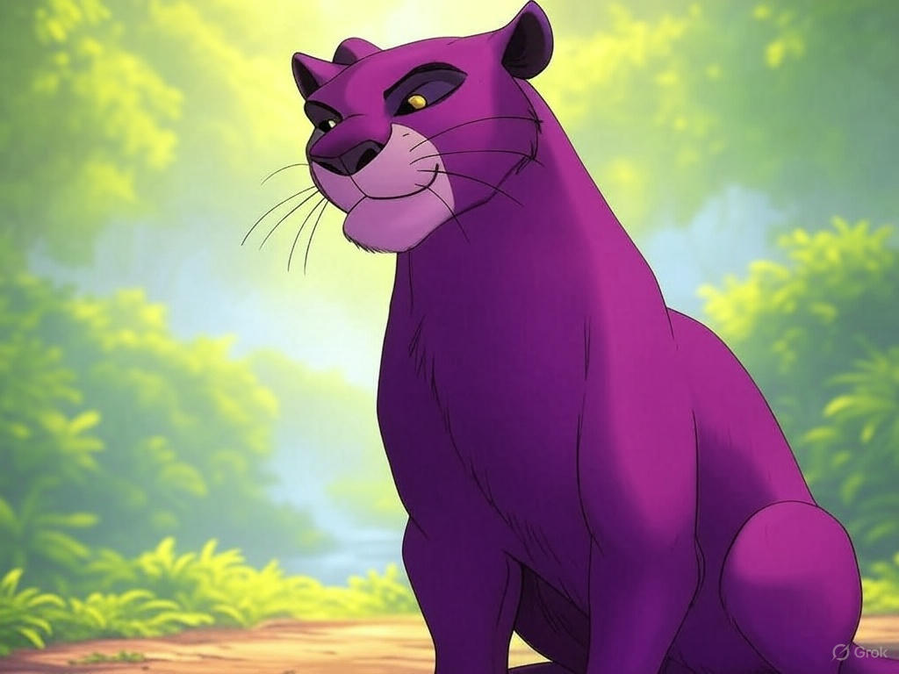
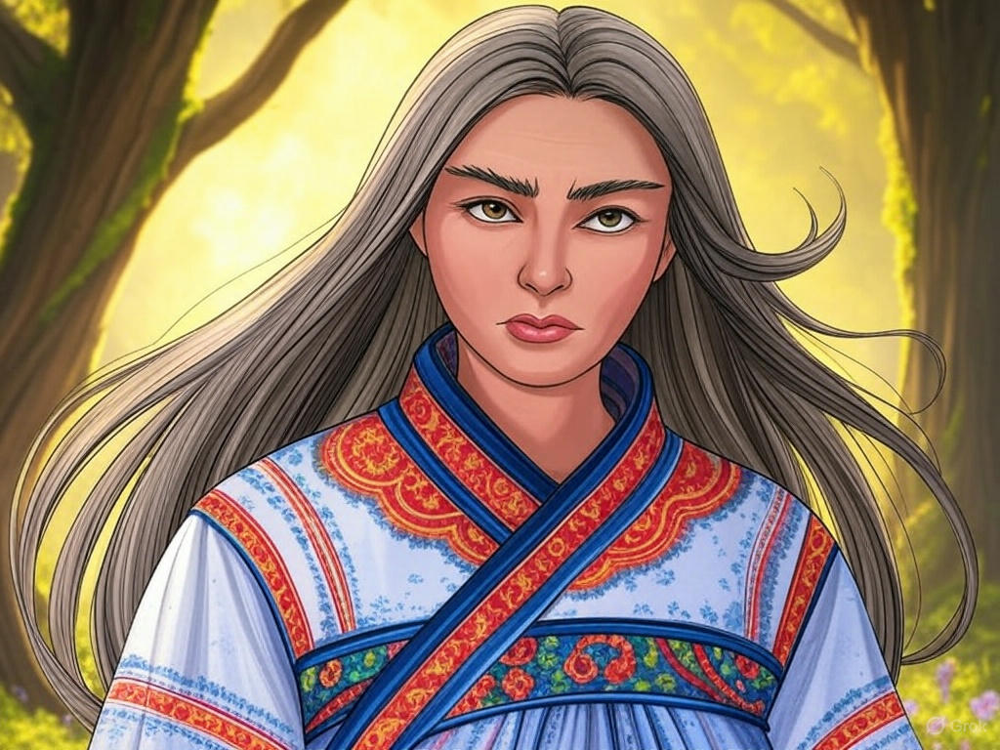
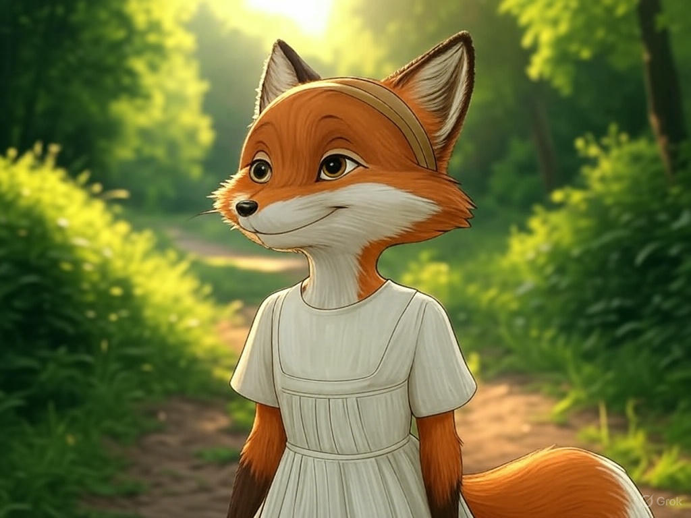
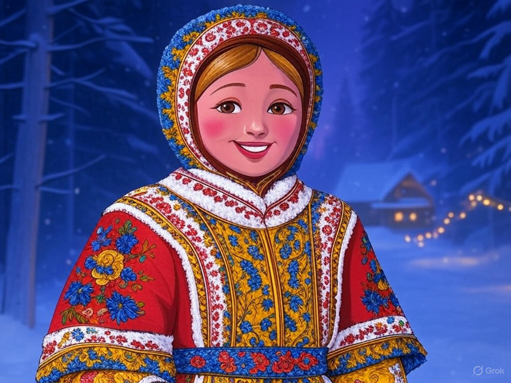
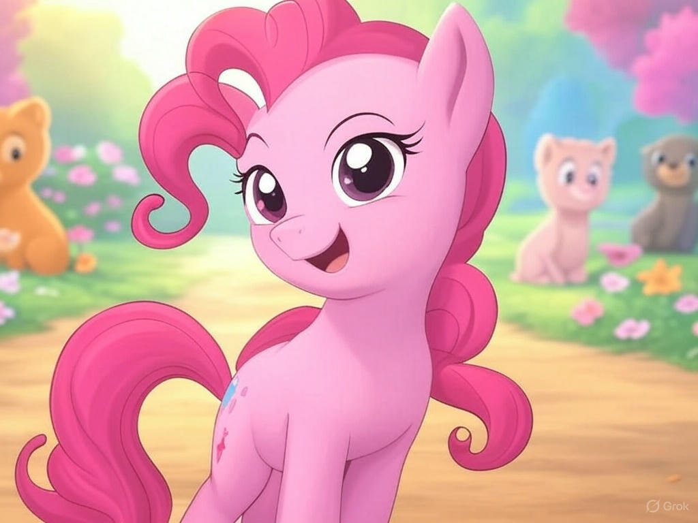

Мария (Маша и Медведь — но не Маша, а именно добрая Мария из русских сказок и мультфильмов) — мудрая, заботливая, всегда поможет.

Фея-крёстная (Золушка) — та самая, которая не просто добрая, а ещё и помогает другим исполнять мечты.

Рокси (Клуб Винкс) — самая земная из фей, но очень душевная и всегда поддержит друзей.

София Прекрасная (София Прекрасная) — добрая принцесса, которая помогает всем, кто рядом.

Миссис Поттс (Красавица и чудовище) — заботливая «мама» коллектива, понимающая и добрая.

Багира (Маугли) — мудрая и заботливая, оберегает своего подопечного.

Матушка Ветра (Сказка о мертвой царевне и семи богатырях) — строгая, но по-настоящему добрая в душе.

Лисавета (Лиса из советских сказок, не хитрая, а заботливая — например, из «Лиса и заяц» 1973 года) — помогает друзьям и защищает слабых.

Снегурочка (Советские мультфильмы про Новый год и Снегурочку) — олицетворение доброты, тепла и заботы.

Пони Пинки Пай (My Little Pony) — гиперактивная, но с искренней заботой обо всех вокруг.